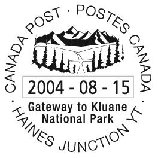

Haines Junction PO pictorial cancel
Gateway to Kluane National Park · Kluane Gateway
- Status
- Expired
- Run dates
- 2004-01-01 to ?
- Design
- "Gateway to Kluane National Park"; mountains
- Ink colour
- Black
- Designer
- Unknown
- Post office
- Haines Junction PO
178 Lucania St
Haines Junction, YT
Y0B 1L0 - Subjects
- nature, mountain, national park
This cancel is retired, so the post office can no longer apply it. Covers with it turn up from dealers and other collectors.
 Haines Junction POHouse
Haines Junction POHouse Carcross PO1st caribou
Carcross PO1st caribou Carcross PO1st sled dog team
Carcross PO1st sled dog team